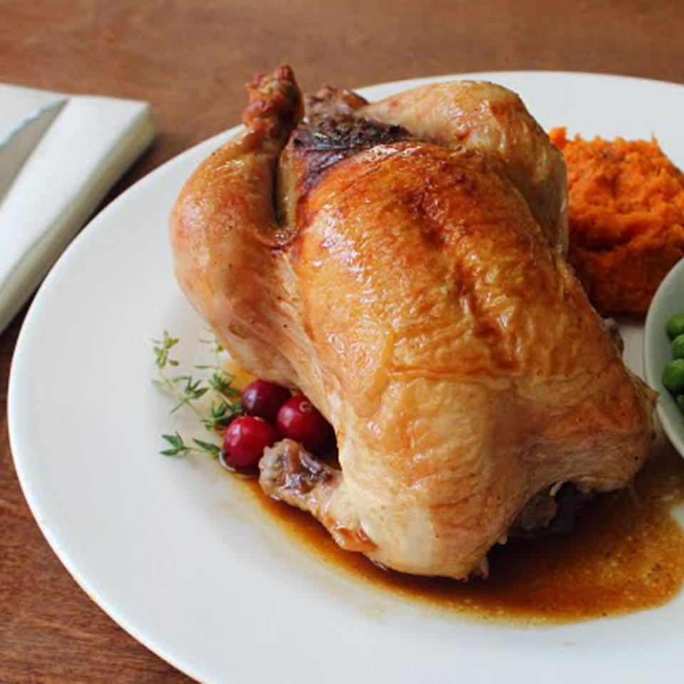

Cranberry Stuffed Game Hens

Description
If you've never worked with game hens before, they're very user-friendly.
Even stuffed to excess, they only roast for about an hour in a hot oven,
and as long as you don't overcook them (use a thermometer!), you'll be enjoying the kind of juicy,
flavorful meat that people cooking turkey only dream of.
Ingredients
- 2 cups 1/2-inch bread cubes (such as walnut bread)
- 3 tablespoons butter
- ¼ cup minced shallots
- 2 tablespoons chopped green onions
- salt and freshly ground black pepper to taste
- ¼ cup dried cranberries
- 1 cup chicken broth
Steps
- Preheat oven to 250 degrees F (120 degrees C). Spread bread cubes in a single layer on a baking sheet.
- Toast bread in the preheated oven until golden, crispy, and completely dry, 20 to 40 minutes. Transfer bread to a large bowl.
- Melt butter in a large skillet over medium heat. Cook and stir shallots and green onions with a pinch of
salt in hot butter until shallots are translucent and soft, 3 to 4 minutes. Add dried cranberries to shallots;
cook and stir until cranberries are warmed through, 2 o 3 minutes.
- Pour chicken broth into skillet; bring broth mixture to a simmer and pour mixture over dried bread cubes.
Stir until liquid is absorbed. Season with chopped thyme, minced rosemary, sage, cayenne pepper, salt,
and black pepper. Mix beaten egg into bread mixture, cover the bowl with plastic wrap, and let stuffing sit
until liquid is absorbed, 10 to 15 minutes.
- Preheat oven to 400 degrees F (200 degrees C).
- Drizzle the bottom of a roasting pan with 2 tablespoons oil and lay thyme sprigs and rosemary sprigs on the bottom of the pan.
- Generously season each hen cavity with salt. Stuff each hen with about 1/2 the bread-cranberry mixture.
Tie legs together and set into prepared roasting pan on top of thyme and rosemary sprigs. Brush hens with
remaining olive oil and season with salt and black pepper.
- Bake hens in the preheated oven until no longer pink at the bone and the juices run clear, about 1 hour.
An instant-read thermometer inserted into the thickest part of the thigh, near the bone should read 165 degrees F (74 degrees C).
Remove hens to a platter, tent loosely with aluminum foil, and let rest for 10 minutes.
- Place roasting pan over medium-high heat. Stir chicken broth, fresh cranberries, and maple syrup into the pan and
bring to a boil while scraping the browned bits of food off of the bottom of the pan with a wooden spoon.
Cook and stir until sauce reduces and thickens, 1 to 3 minutes. Spoon sauce over stuffed hens.
Back to homepage